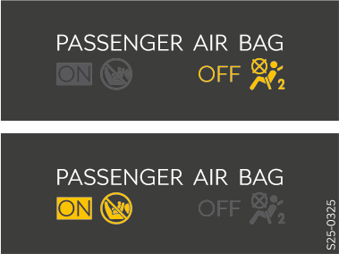

Affichage d'état de l’airbag frontal du passager avant

Après avoir mis le contact, les deux voyants s’allument brièvement.
Si le système fonctionne correctement, les deux voyants s’éteignent.
Ensuite, l’un des témoins de contrôle suivants s’allumera en fonction de la position de l’interrupteur à clé.

allumé - airbag du passager avant désactivé


allumé pendant 65 s après la mise du contact - airbag frontal du passager avant activé